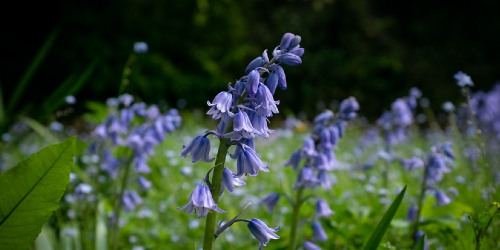

BlueBell
A BlueBellis a bulbous perennial plant, found in Atlantic areas from north-western Spain to the British Isles, and also frequently used as a garden plant.

Peony
The peony or paeony is a flowering plant in the genus Paeonia, the only genus in the family Paeoniaceae.
Lily
is a genus of herbaceous flowering plants growing from bulbs, all with large prominent flowers.
Daisy
A Daisy is a small grassland plant that has flowers with a yellow disk and white rays. It has given rise to mant ornamental garden varities.
Sunflower
Sunflower is a large annual forb of the genus Helianthus grown as a crop for its edible oil and edible fruits
Hyacinth
Hyacinthus is a small genus of bulbous, spring-blooming perennial, fragrant flowering plants in the family Asparagaceae, subfamily Scilloideae.
Cherry Blossom
A Cherry blossom is a flower of
many trees of genus Prunus. The
most well-known species is the
Japanese cherry, Prunus serrulata,
which is commonly called sakura.
Tulips
Tulips form a genus of spring-blooming perennial herbaceous bulbiferous geophytes. The flowers are usually large, showy and brightly colored, generally red, pink, yellow, or white.
Iris
Iris is a genus of 260–300
species of flowering plants with
showy flowers. It takes its
name from the Greek word for a
rainbow, which is also the name
for the Greek goddess of the
rainbow, Iris.